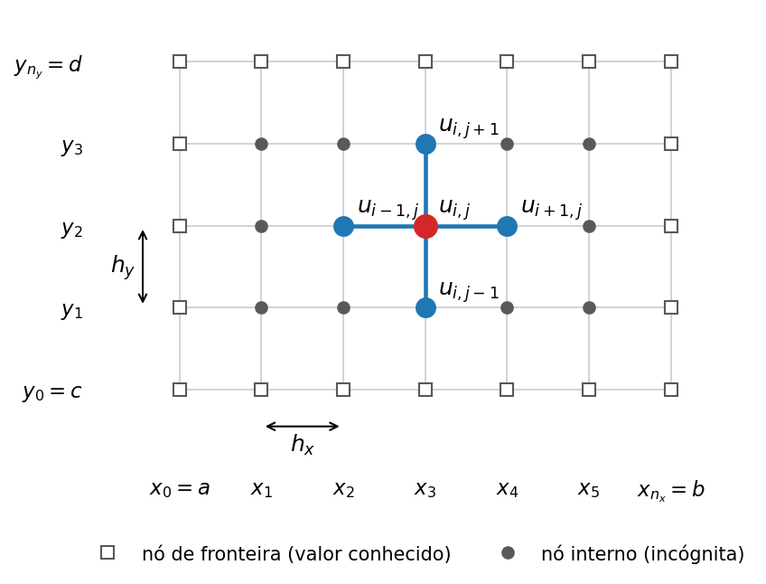
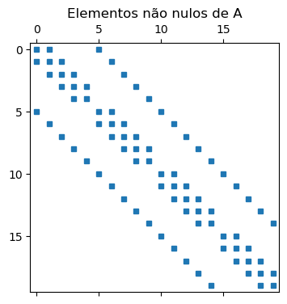
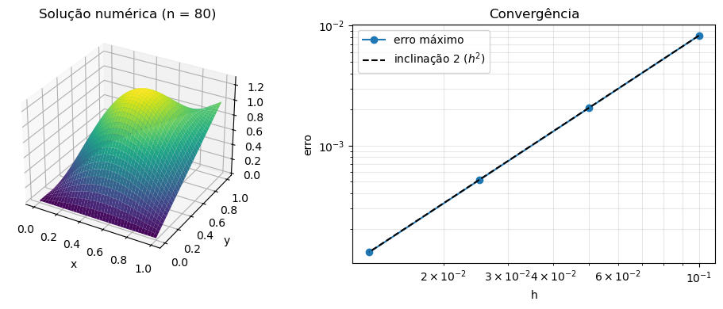
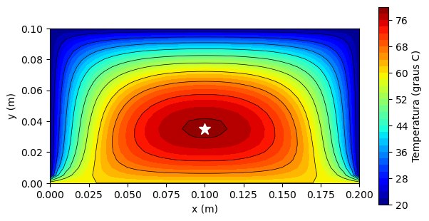
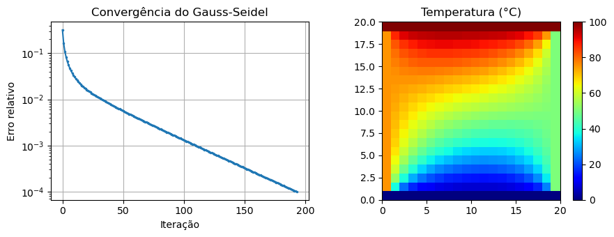
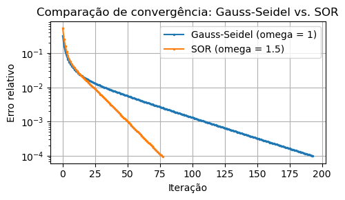
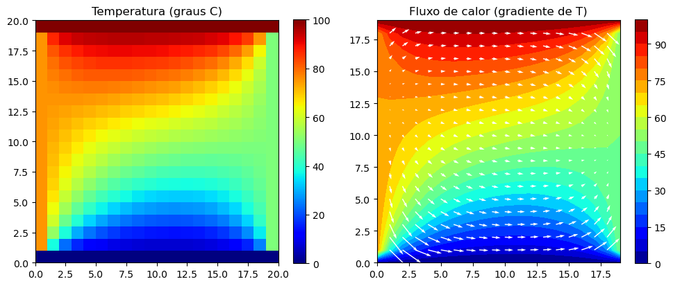
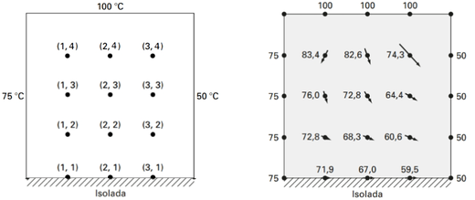
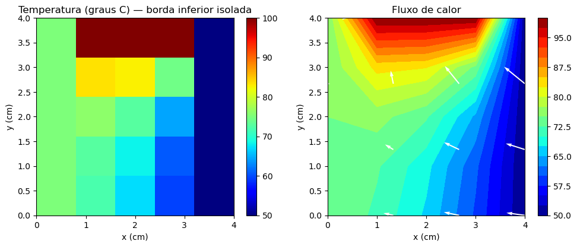

8.3 EDPs Elípticas#
Equações elípticas descrevem situações de equilíbrio: a distribuição de temperatura em uma placa depois que o regime transiente terminou, o potencial elétrico em uma região sem cargas livres ou a deflexão de uma membrana sob carga estática. Nesses problemas não há variável tempo, e o valor da solução em cada ponto depende do que é imposto em toda a fronteira do domínio. Na Seção 8.2 vimos que uma EDP linear de segunda ordem é elíptica quando \(B^2-4AC<0\); o exemplo mais importante é o operador laplaciano.
Nesta seção vamos tratar a equação de Poisson em um retângulo \(\Omega=[a,b]\times[c,d]\),
com o valor de \(u\) prescrito em toda a fronteira \(\partial\Omega\) (condição de Dirichlet):
Quando \(f\equiv 0\), a Eq. (1) é a equação de Laplace. Na condução de calor em regime permanente, por exemplo, \(u\) é a temperatura e \(f=-q/k\), em que \(q\) é a taxa de geração interna de calor (em W/m³) e \(k\) é a condutividade térmica do material.
A malha e o estêncil de cinco pontos#
Dividimos o intervalo \([a,b]\) em \(n_x\) subintervalos de comprimento \(h_x=(b-a)/n_x\) e o intervalo \([c,d]\) em \(n_y\) subintervalos de comprimento \(h_y=(d-c)/n_y\), obtendo os nós
Denotamos por \(u_{i,j}\) a aproximação de \(u(x_i,y_j)\) e escrevemos \(f_{i,j}=f(x_i,y_j)\). Os nós com \(i\in\{0,n_x\}\) ou \(j\in\{0,n_y\}\) estão na fronteira, onde \(u\) é conhecido pela Eq. (2). Os \((n_x-1)(n_y-1)\) nós restantes são as incógnitas do problema.

Figura 8.3.1 - Malha retangular e estêncil de cinco pontos em torno do nó \((x_i,y_j)\).
Em cada nó interno, aproximamos as derivadas segundas por diferenças centrais. Somando as expansões de Taylor
em que \(u\) e suas derivadas são calculadas em \((x_i,y_j)\), os termos de ordem ímpar se cancelam e obtemos
para algum \(\xi\in(x_{i-1},x_{i+1})\). O mesmo vale na direção \(y\), com \(h_y\) no lugar de \(h_x\). Substituindo essas aproximações na Eq. (1) e desprezando os termos de erro, chegamos às equações de diferenças finitas
Cada equação envolve apenas o nó \((x_i,y_j)\) e seus quatro vizinhos, que formam o estêncil de cinco pontos da Figura 8.3.1. Como os termos desprezados são proporcionais a \(h_x^2\) e \(h_y^2\), esperamos que o erro da solução numérica diminua como \(h^2\): ao dividir o espaçamento por 2, o erro deve cair aproximadamente por 4.
Quando \(h_x=h_y=h\), a Eq. (3) assume a forma
Para a equação de Laplace (\(f=0\)), isso diz que cada \(u_{i,j}\) é a média dos valores nos quatro vizinhos. É a versão discreta da propriedade do valor médio das funções harmônicas, e ajuda a entender por que a solução da equação de Laplace é sempre “suave” e não tem máximos nem mínimos no interior do domínio.
Montagem do sistema linear#
As Eqs. (3) formam um sistema linear \(A\mathbf{u}=\mathbf{b}\) com uma incógnita para cada nó interno. Para escrevê-lo, numeramos os nós internos percorrendo primeiro a direção \(y\): o nó \((i,j)\) recebe o índice \(k=(i-1)(n_y-1)+(j-1)\). Com essa ordenação, a matriz pode ser escrita de forma compacta com o produto de Kronecker \(\otimes\):
em que \(I_m\) é a matriz identidade de ordem \(m\) e \(T_m\) é a matriz tridiagonal de ordem \(m\) com \(-2\) na diagonal principal e \(1\) nas diagonais vizinhas, que representa a segunda diferença em uma dimensão. Lembre que \(P\otimes Q\) é a matriz em blocos cujo bloco \((r,s)\) é \(p_{rs}\,Q\). O primeiro termo da Eq. (4) acopla cada nó a seus vizinhos na direção \(x\), e o segundo, aos vizinhos na direção \(y\).
O vetor \(\mathbf{b}\) contém os valores \(f_{i,j}\), corrigidos nos nós vizinhos à fronteira: quando um dos quatro vizinhos de \((x_i,y_j)\) está na fronteira, seu valor é conhecido e passa para o lado direito da equação. Por exemplo, para \(i=1\), o termo \(u_{0,j}/h_x^2\) é subtraído de \(f_{1,j}\).
A matriz \(A\) tem ordem \((n_x-1)(n_y-1)\), mas no máximo cinco elementos não nulos por linha. Em uma malha com \(n_x=n_y=100\), são cerca de \(10^4\) incógnitas e \(5\times 10^4\) elementos não nulos, em uma matriz com quase \(10^8\) posições. Por isso, armazenamos \(A\) no formato esparso do módulo scipy.sparse, que guarda apenas os elementos não nulos, e resolvemos o sistema com scipy.sparse.linalg.spsolve.
import numpy as np
import matplotlib.pyplot as plt
import scipy.sparse as sp
import scipy.sparse.linalg as spla
Para visualizar a estrutura da matriz, vamos montá-la para uma malha pequena, com \(n_x=5\), \(n_y=6\) e \(h_x=h_y=1\), e marcar os elementos não nulos com a função plt.spy.
def segunda_diferenca(n):
"""Matriz tridiagonal de ordem n com (1, -2, 1) nas diagonais."""
return sp.diags([1, -2, 1], [-1, 0, 1], shape=(n, n))
nx, ny = 5, 6
A = (sp.kron(segunda_diferenca(nx - 1), sp.identity(ny - 1))
+ sp.kron(sp.identity(nx - 1), segunda_diferenca(ny - 1)))
print(f"ordem da matriz: {A.shape[0]}, elementos não nulos: {A.nnz}")
fig, ax = plt.subplots(figsize=(4, 4))
ax.spy(A, markersize=5)
ax.set_title('Elementos não nulos de A')
plt.show()
ordem da matriz: 20, elementos não nulos: 82

A matriz é tridiagonal por blocos: os blocos da diagonal, de ordem \(n_y-1=5\), são tridiagonais e ligam cada nó aos vizinhos na direção \(y\); os blocos imediatamente acima e abaixo são múltiplos da identidade e ligam os vizinhos na direção \(x\). Além disso, \(A\) é simétrica e \(-A\) é definida positiva, o que garante que o sistema tem solução única.
A rotina a seguir reúne todos esses passos. As funções f e g devem aceitar arrays do NumPy, e g é avaliada apenas nos nós da fronteira. A solução é devolvida em uma matriz U em que U[i, j] aproxima \(u(x_i,y_j)\).
def poisson_dirichlet(f, g, a, b, c, d, nx, ny):
"""
Resolve u_xx + u_yy = f(x, y) no retângulo [a, b] x [c, d], com
u = g(x, y) na fronteira, pelo método de diferenças finitas com o
estêncil de cinco pontos.
Retorna os vetores x e y dos nós e a matriz U, com U[i, j] ~ u(x[i], y[j]).
"""
x = np.linspace(a, b, nx + 1)
y = np.linspace(c, d, ny + 1)
X, Y = np.meshgrid(x, y, indexing='ij')
hx2 = (x[1] - x[0])**2
hy2 = (y[1] - y[0])**2
# valores prescritos na fronteira
U = np.zeros((nx + 1, ny + 1))
U[0, :] = g(x[0], y)
U[-1, :] = g(x[-1], y)
U[:, 0] = g(x, y[0])
U[:, -1] = g(x, y[-1])
# matriz do sistema, Eq. (4)
A = (sp.kron(segunda_diferenca(nx - 1), sp.identity(ny - 1)) / hx2
+ sp.kron(sp.identity(nx - 1), segunda_diferenca(ny - 1)) / hy2)
# lado direito: f nos nós internos menos a contribuição da fronteira
B = f(X[1:-1, 1:-1], Y[1:-1, 1:-1]) * np.ones((nx - 1, ny - 1))
B[0, :] -= U[0, 1:-1] / hx2
B[-1, :] -= U[-1, 1:-1] / hx2
B[:, 0] -= U[1:-1, 0] / hy2
B[:, -1] -= U[1:-1, -1] / hy2
# resolve e devolve os valores aos nós internos
U[1:-1, 1:-1] = spla.spsolve(A.tocsr(), B.ravel()).reshape(nx - 1, ny - 1)
return x, y, U
Exemplo 8.3.1: Verificação com uma solução conhecida
Uma boa maneira de testar um programa como esse é escolher uma função \(u\), calcular o lado direito \(f=\nabla^2 u\) correspondente e verificar se a solução numérica reproduz a função escolhida. Tomemos
Como \(\nabla^2(xy)=0\), temos \(f(x,y)=-2\pi^2\sin(\pi x)\sin(\pi y)\). Os valores na fronteira são os da própria \(u\): \(u=0\) nas bordas \(x=0\) e \(y=0\), \(u=y\) na borda \(x=1\) e \(u=x\) na borda \(y=1\). Vamos resolver o problema em malhas cada vez mais finas e medir o erro máximo nos nós.
u_exata = lambda x, y: np.sin(np.pi*x)*np.sin(np.pi*y) + x*y
f = lambda x, y: -2*np.pi**2*np.sin(np.pi*x)*np.sin(np.pi*y)
malhas = [10, 20, 40, 80]
erros = []
print(f"{'n':>4} {'h':>8} {'erro máximo':>13} {'razão':>7}")
for n in malhas:
x, y, U = poisson_dirichlet(f, u_exata, 0, 1, 0, 1, n, n)
X, Y = np.meshgrid(x, y, indexing='ij')
erros.append(np.max(np.abs(U - u_exata(X, Y))))
razao = f"{erros[-2]/erros[-1]:7.2f}" if len(erros) > 1 else ""
print(f"{n:4d} {1/n:8.4f} {erros[-1]:13.3e} {razao}")
n h erro máximo razão
10 0.1000 8.265e-03
20 0.0500 2.059e-03 4.01
40 0.0250 5.142e-04 4.00
80 0.0125 1.285e-04 4.00
h = 1 / np.array(malhas)
fig = plt.figure(figsize=(10, 4))
ax1 = fig.add_subplot(1, 2, 1, projection='3d')
ax1.plot_surface(X, Y, U, cmap='viridis')
ax1.set_xlabel('x')
ax1.set_ylabel('y')
ax1.set_title(f'Solução numérica (n = {malhas[-1]})')
ax2 = fig.add_subplot(1, 2, 2)
ax2.loglog(h, erros, 'o-', label='erro máximo')
ax2.loglog(h, erros[0]*(h/h[0])**2, 'k--', label='inclinação 2 ($h^2$)')
ax2.set_xlabel('h')
ax2.set_ylabel('erro')
ax2.set_title('Convergência')
ax2.legend()
ax2.grid(True, which='both', alpha=0.3)
plt.tight_layout()
plt.show()

Cada vez que \(h\) é dividido por 2, o erro é dividido por 4, e no gráfico em escala logarítmica os pontos ficam sobre uma reta de inclinação 2. Isso confirma que o método tem ordem 2, como previsto pela análise do erro de truncamento.
Exemplo 8.3.2: Placa com geração interna de calor
Uma placa de aço inoxidável de \(20\,\text{cm}\times 10\,\text{cm}\), com condutividade térmica \(k=15\,\text{W/(m·K)}\), tem uma resistência elétrica embutida que gera calor de modo uniforme, à taxa \(q=5\times 10^5\,\text{W/m}^3\). A borda inferior está em contato com uma superfície a \(60\,°C\), e as outras três bordas são mantidas a \(20\,°C\). Supondo que as faces da placa estejam isoladas, de modo que o calor flua apenas no plano da placa, a temperatura em regime permanente satisfaz
com \(x\) e \(y\) em metros. Qual é a temperatura máxima na placa e onde ela ocorre?
k = 15.0 # condutividade térmica, W/(m.K)
q = 5e5 # geração de calor, W/m^3
def T_contorno(x, y):
# 60 graus C na borda inferior (y = 0) e 20 graus C nas demais
return np.where(y == 0, 60.0, 20.0) * np.ones_like(x + y)
x, y, T = poisson_dirichlet(lambda x, y: -q/k, T_contorno, 0, 0.2, 0, 0.1, 40, 20)
i, j = np.unravel_index(np.argmax(T), T.shape)
print(f"Temperatura máxima: {T[i, j]:.1f} graus C")
print(f"Posição: x = {x[i]:.3f} m, y = {y[j]:.3f} m")
X, Y = np.meshgrid(x, y, indexing='ij')
fig, ax = plt.subplots(figsize=(7, 3.6))
cf = ax.contourf(X, Y, T, levels=30, cmap='jet')
ax.contour(X, Y, T, levels=10, colors='k', linewidths=0.5)
ax.plot(x[i], y[j], 'w*', markersize=12)
ax.set_aspect('equal')
ax.set_xlabel('x (m)')
ax.set_ylabel('y (m)')
plt.colorbar(cf, ax=ax, label='Temperatura (graus C)')
plt.show()
Temperatura máxima: 78.6 graus C
Posição: x = 0.100 m, y = 0.035 m

A temperatura máxima, de cerca de \(78{,}6\,°C\), ocorre no eixo de simetria vertical da placa (\(x=0{,}1\) m), mas abaixo do centro geométrico, deslocada na direção da borda inferior, que é a mais quente. Sem a fonte de calor (\(q=0\)), a temperatura ficaria entre \(20\,°C\) e \(60\,°C\) em toda a placa: uma solução da equação de Laplace atinge seus valores máximo e mínimo na fronteira do domínio (princípio do máximo), o que está de acordo com a propriedade do valor médio vista acima.
Método iterativo de Gauss-Seidel#
A rotina poisson_dirichlet() resolve o sistema (3) por um método direto. Como o número de incógnitas cresce com o quadrado do número de subdivisões, em malhas muito finas, e sobretudo em problemas tridimensionais, a eliminação torna-se cara em tempo e memória, mesmo aproveitando a esparsidade. Além disso, nem sempre é conveniente montar a matriz explicitamente.
Uma alternativa eficiente é o método iterativo de Gauss-Seidel (também chamado de método de Liebmann no contexto de EDPs). Para a equação de Laplace, a equação de diferenças finitas
pode ser reescrita na forma de atualização
O algoritmo inicializa o campo com um valor estimado (por exemplo, a média das temperaturas de contorno), aplica essa fórmula repetidamente para cada nó interno — usando sempre os valores mais recentes disponíveis — e itera até que o erro relativo entre iterações consecutivas seja menor que uma tolerância \(\varepsilon\):
Exemplo 8.3.3: Placa aquecida — método de Gauss-Seidel
Considere uma placa quadrada (Chapra, 2016) com temperaturas constantes nas bordas:
Borda |
Temperatura |
|---|---|
Inferior |
75 °C |
Superior |
50 °C |
Esquerda |
0 °C |
Direita |
100 °C |
Resolver por Gauss-Seidel com tolerância \(\varepsilon = 10^{-4}\) e malha \(20 \times 20\).
import numpy as np
import matplotlib.pyplot as plt
ni, nj = 20, 20
T = np.zeros((ni, nj))
T[0, :] = 75 # borda inferior
T[-1, :] = 50 # borda superior
T[:, 0] = 0 # borda esquerda
T[:, -1] = 100 # borda direita
T_ant = T.copy()
err_hist = []
err = 1.0
while err > 1e-4:
for i in range(1, ni - 1):
for j in range(1, nj - 1):
T[i, j] = (T[i-1, j] + T[i+1, j] + T[i, j-1] + T[i, j+1]) / 4
err = np.linalg.norm(T - T_ant) / np.linalg.norm(T)
err_hist.append(err)
T_ant = T.copy()
print(f"Convergência em {len(err_hist)} iterações")
fig, axes = plt.subplots(1, 2, figsize=(9, 3.5))
axes[0].plot(err_hist, '.-', markersize=3)
axes[0].set_yscale('log')
axes[0].set_xlabel('Iteração')
axes[0].set_ylabel('Erro relativo')
axes[0].set_title('Convergência do Gauss-Seidel')
axes[0].grid(True)
im = axes[1].pcolor(T.T, cmap='jet')
axes[1].set_aspect('equal')
axes[1].set_title('Temperatura (°C)')
plt.colorbar(im, ax=axes[1])
plt.tight_layout()
plt.show()
Convergência em 194 iterações

Sobrerelaxação (SOR)#
O método de sobrerelaxação sucessiva (SOR, do inglês Successive Over-Relaxation) acelera a convergência do Gauss-Seidel aplicando um fator de peso \(\omega \in (1, 2)\) após cada atualização:
onde \(\tilde{T}_{i,j}\) é o valor calculado pela fórmula de Gauss-Seidel. Para \(\omega = 1\) recupera-se o método original; valores \(\omega > 1\) induzem uma extrapolação na direção da atualização, acelerando a convergência. O valor ótimo de \(\omega\) depende do problema, mas valores entre \(1{,}2\) e \(1{,}9\) são tipicamente eficazes.
T_sor = np.zeros((ni, nj))
T_sor[0, :] = 75
T_sor[-1, :] = 50
T_sor[:, 0] = 0
T_sor[:, -1] = 100
omega = 1.5
T_ant = T_sor.copy()
err_sor = []
err = 1.0
while err > 1e-4:
for i in range(1, ni - 1):
for j in range(1, nj - 1):
T_gs = (T_sor[i-1, j] + T_sor[i+1, j] + T_sor[i, j-1] + T_sor[i, j+1]) / 4
T_sor[i, j] = omega * T_gs + (1 - omega) * T_sor[i, j]
err = np.linalg.norm(T_sor - T_ant) / np.linalg.norm(T_sor)
err_sor.append(err)
T_ant = T_sor.copy()
print(f"Gauss-Seidel : {len(err_hist)} iterações")
print(f"SOR (omega={omega}): {len(err_sor)} iterações")
fig, ax = plt.subplots(figsize=(5, 3))
ax.plot(err_hist, '.-', markersize=3, label='Gauss-Seidel (omega = 1)')
ax.plot(err_sor, '.-', markersize=3, label=f'SOR (omega = {omega})')
ax.set_yscale('log')
ax.set_xlabel('Iteração')
ax.set_ylabel('Erro relativo')
ax.set_title('Comparação de convergência: Gauss-Seidel vs. SOR')
ax.legend()
ax.grid(True)
plt.tight_layout()
plt.show()
Gauss-Seidel : 194 iterações
SOR (omega=1.5): 78 iterações

Gradiente e fluxo de calor#
A distribuição de temperatura \(T(x,y)\) determina o vetor fluxo de calor em cada ponto da placa. Pela lei de Fourier, o fluxo aponta na direção do gradiente negativo de temperatura:
A função np.gradient calcula numericamente as componentes \(\partial T/\partial x\) e \(\partial T/\partial y\) a partir da solução discreta, e plt.quiver exibe o campo vetorial sobreposto à distribuição de temperatura.
dTdy, dTdx = np.gradient(T[1:-1, 1:-1])
ii, jj = np.meshgrid(np.arange(1, nj - 1), np.arange(1, ni - 1))
fig, axes = plt.subplots(1, 2, figsize=(10, 4))
im = axes[0].pcolor(T.T, cmap='jet')
axes[0].set_aspect('equal')
axes[0].set_title('Temperatura (graus C)')
plt.colorbar(im, ax=axes[0])
cf = axes[1].contourf(T.T, levels=20, cmap='jet')
axes[1].quiver(jj, ii, dTdx, dTdy, color='white', scale=200, width=0.004)
axes[1].set_aspect('equal')
axes[1].set_title('Fluxo de calor (gradiente de T)')
plt.colorbar(cf, ax=axes[1])
plt.tight_layout()
plt.show()

Condição de contorno de Neumann#
Nos exemplos anteriores, as bordas tinham temperatura prescrita — denominadas condições de Dirichlet. Em muitas situações práticas, porém, o que é dado é o fluxo de calor na borda, isto é, a derivada normal à superfície. Essas são chamadas condições de Neumann.
O caso mais frequente em engenharia é a borda isolada, na qual o fluxo é nulo:
Estratégia do ponto fictício. Para incorporar essa condição no esquema de diferenças finitas, introduz-se um nó fictício externo à malha, cujo valor é eliminado algebricamente usando a aproximação por diferenças centrais da derivada.
Para a borda inferior (\(j = 0\)), a condição de isolamento resulta em:
Substituindo na equação do nó \((i, 0)\):
O coeficiente 2 no vizinho superior (em vez de 1) é a única modificação em relação à equação interior padrão, refletindo a simetria imposta pelo isolamento.
Fluxo de calor nas bordas
A partir da solução numérica, o vetor fluxo de calor pode ser estimado por diferenças finitas centrais e pela lei de Fourier (Chapra e Canale, 2016):
O módulo do fluxo resultante é \(q_n = \sqrt{q_x^2 + q_y^2}\) e sua direção é \(\theta = \arctan(q_y / q_x)\).
Exemplo 8.3.4: Placa aquecida com borda inferior isolada
(Fonte: Chapra e Canale, 2016) Placa de \(4\,\text{cm} \times 4\,\text{cm}\) com as seguintes condições de contorno:
Borda |
Condição |
|---|---|
Esquerda (\(x = 0\)) |
\(T = 75\,°C\) (Dirichlet) |
Direita (\(x = 4\,\text{cm}\)) |
\(T = 50\,°C\) (Dirichlet) |
Superior (\(y = 4\,\text{cm}\)) |
\(T = 100\,°C\) (Dirichlet) |
Inferior (\(y = 0\)) |
\(\partial T/\partial y = 0\) (Neumann — isolada) |
Com \(\Delta x = \Delta y = 1\,\text{cm}\), a borda inferior passa a ser uma linha de nós ativos (em vez de nós com valor prescrito). O sistema tem \(3 \times 4 = 12\) incógnitas.

# Sistema 12x12 — nós da borda inferior incluídos (Neumann)
# Linhas: j = 0 (inferior, isolada) até j = 3 (interior)
# Colunas: i = 1, 2, 3 (interior em x)
A_neu = np.array([
[ 4,-1, 0,-2, 0, 0, 0, 0, 0, 0, 0, 0],
[-1, 4,-1, 0,-2, 0, 0, 0, 0, 0, 0, 0],
[ 0,-1, 4, 0, 0,-2, 0, 0, 0, 0, 0, 0],
[-1, 0, 0, 4,-1, 0,-1, 0, 0, 0, 0, 0],
[ 0,-1, 0,-1, 4,-1, 0,-1, 0, 0, 0, 0],
[ 0, 0,-1, 0,-1, 4, 0, 0,-1, 0, 0, 0],
[ 0, 0, 0,-1, 0, 0, 4,-1, 0,-1, 0, 0],
[ 0, 0, 0, 0,-1, 0,-1, 4,-1, 0,-1, 0],
[ 0, 0, 0, 0, 0,-1, 0,-1, 4, 0, 0,-1],
[ 0, 0, 0, 0, 0, 0,-1, 0, 0, 4,-1, 0],
[ 0, 0, 0, 0, 0, 0, 0,-1, 0,-1, 4,-1],
[ 0, 0, 0, 0, 0, 0, 0, 0,-1, 0,-1, 4]
], dtype=float)
b_neu = np.array([75, 0, 50, 75, 0, 50, 75, 0, 50, 175, 100, 150], dtype=float)
T_int = np.linalg.solve(A_neu, b_neu).reshape(4, 3)
print("Temperaturas nos nos internos e na borda inferior (linhas=y crescente, colunas=x):")
print(np.flipud(np.round(T_int, 2)))
Temperaturas nos nos internos e na borda inferior (linhas=y crescente, colunas=x):
[[83.41 82.63 74.26]
[76.02 72.84 64.42]
[72.81 68.31 60.57]
[71.91 67.01 59.54]]
x_mesh, y_mesh = np.meshgrid(np.linspace(0, 4, 6), np.linspace(0, 4, 6))
T_neu = np.zeros((5, 5))
T_neu[-1, :] = 100 # borda superior
T_neu[:, 0] = 75 # borda esquerda
T_neu[:, -1] = 50 # borda direita
T_neu[0:-1, 1:-1] = T_int # nos internos + borda inferior
fig, axes = plt.subplots(1, 2, figsize=(10, 4))
im = axes[0].pcolormesh(x_mesh, y_mesh, T_neu, cmap='jet', shading='flat')
axes[0].set_aspect('equal')
axes[0].set_xlabel('x (cm)')
axes[0].set_ylabel('y (cm)')
axes[0].set_title('Temperatura (graus C) — borda inferior isolada')
plt.colorbar(im, ax=axes[0])
dTdy_n, dTdx_n = np.gradient(T_neu[:-1, :-1])
ii_n, jj_n = np.meshgrid(np.linspace(0, 4, 4), np.linspace(0, 4, 4))
xn, yn = np.meshgrid(np.linspace(0,4,5),
np.linspace(0,4,5))
cf = axes[1].contourf(xn, yn, T_neu, levels=20, cmap='jet')
axes[1].quiver(ii_n, jj_n, dTdx_n, dTdy_n, color='white', scale=80, width=0.006)
axes[1].set_aspect('equal')
axes[1].set_xlabel('x (cm)')
axes[1].set_ylabel('y (cm)')
axes[1].set_title('Fluxo de calor')
plt.colorbar(cf, ax=axes[1])
plt.tight_layout()
plt.show()

Exercícios#
1. Use a rotina
poisson_dirichlet()nos problemas a seguir.(a) Resolva \(\nabla^2 u=6(x+y)\) em \([0,1]\times[0,1]\), com \(u=x^3+y^3\) na fronteira, para \(n_x=n_y=4\), \(8\) e \(16\), e calcule o erro máximo em relação à solução exata \(u(x,y)=x^3+y^3\). Por que o erro fica no nível do erro de arredondamento, mesmo em uma malha tão grosseira? (Sugestão: observe o termo de erro da aproximação das derivadas segundas.)
(b) Resolva a equação de Laplace em \([0,2]\times[0,1]\), com \(u=0\) nas bordas \(x=0\), \(y=0\) e \(y=1\), e \(u(2,y)=\sin(\pi y)\). A solução exata é
\[u(x,y)=\frac{\sinh(\pi x)\sin(\pi y)}{\sinh(2\pi)}.\]Use \(n_x=2n_y\) com \(n_y=10\), \(20\) e \(40\), e verifique numericamente a ordem de convergência do método.
(c) A deflexão de uma membrana quadrada de lado 1, presa nas bordas e submetida a uma pressão uniforme, é proporcional à solução de \(\nabla^2 u=-1\) com \(u=0\) na fronteira. Calcule \(u(0{,}5;\,0{,}5)\) com \(n_x=n_y=20\), \(40\) e \(80\) e compare com o valor de referência \(0{,}073671\). Faça um gráfico de superfície da solução.
2. Retome a placa aquecida do Exemplo 8.3.3 (bordas a \(75\,°C\), \(50\,°C\), \(0\,°C\) e \(100\,°C\), malha \(20\times 20\)).
(a) Resolva o problema com o método de SOR para \(\omega = 1{,}0\); \(1{,}2\); \(1{,}5\); \(1{,}7\) e \(1{,}9\), contando o número de iterações até a convergência (\(\varepsilon = 10^{-4}\)) em cada caso.
(b) Plote o número de iterações em função de \(\omega\).
(c) Com base no gráfico, estime o valor de \(\omega\) que minimiza o número de iterações para esse problema.
3. Considere a mesma placa de \(4\,\text{cm}\times 4\,\text{cm}\) do Exemplo 8.3.4, com \(\Delta x=\Delta y=1\,\text{cm}\), mas agora com a borda direita isolada (condição de Neumann, fluxo nulo) em vez da borda inferior. As demais bordas permanecem com condição de Dirichlet: esquerda \(=75\,°C\), superior \(=100\,°C\), inferior \(=50\,°C\).
(a) Adapte a estratégia do ponto fictício (apresentada para a borda inferior) para eliminar o nó fictício na borda direita, obtendo a equação modificada para os nós dessa borda.
(b) Monte o sistema linear \(12\times 12\) correspondente e resolva com
np.linalg.solve.(c) Plote a distribuição de temperatura resultante.
4. Utilize a solução obtida no Exemplo 8.3.2 (placa com geração interna de calor).
(a) Calcule o fluxo de calor \(\mathbf{q}=-k\nabla T\) a partir da solução discreta, usando
np.gradientcom os espaçamentos da malha.(b) Plote a distribuição de temperatura e sobreponha o campo vetorial de \(\mathbf{q}\) com
plt.quiver, como foi feito no Exemplo 8.3.3.(c) Por qual das bordas sai mais calor? Justifique com base no gráfico.
5. Compare o método direto com o método de Gauss-Seidel na placa do Exemplo 8.3.3 (bordas a \(75\,°C\), \(50\,°C\), \(0\,°C\) e \(100\,°C\)).
(a) Escreva uma função
fronteira(x, y)que reproduza essas condições de contorno e resolva o problema compoisson_dirichlet()para \(n_x=n_y=10\), \(20\), \(40\) e \(80\).(b) Resolva os mesmos problemas com o método de Gauss-Seidel do Exemplo 8.3.3 e meça o tempo gasto por cada método com
time.perf_counter().(c) Como cresce o número de iterações do Gauss-Seidel com o número de subdivisões? Qual dos métodos é mais vantajoso nas malhas finas?